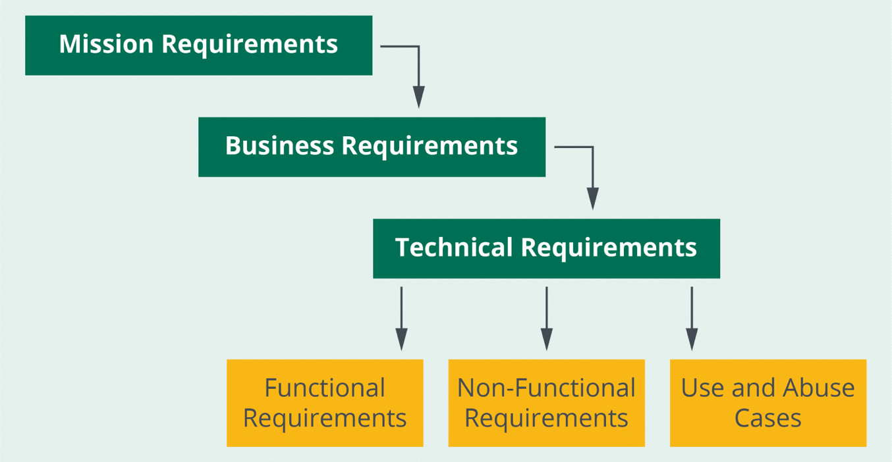
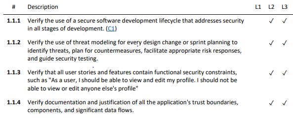
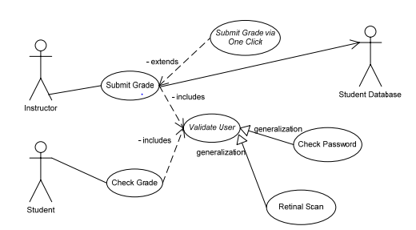

Organizations must ensure that their overall activities and
operations are aligned with applicable laws, regulations, and standards. These
mandates may impose requirements including protections for sensitive information. In
the Information Technology (IT) context, organizations need to assure—and be able to
show—that IT systems are properly secured, and the information contained in those
systems is protected adequately. IT controls must be evaluated to ensure that there
are no gaps and that controls are effective, meaning that they are working as
intended.
Objectives
Describe requirements management.
Recognize functional and nonfunctional requirements.
Explain the impact of security-focused stories in SCRUM/SCRUM-like
methodologies.
Overview
Organizations need mature processes to effectively manage
requirements. To do this, they must capture and specify software security
requirements as part of the overall requirements for the software product. Whatever
methods the organization uses to achieve this goal must be monitored to ensure
effectiveness and success.
Requirements Management
In short, software requirements define the capabilities,
business rules, qualities, constraints, and other elements in a software product
that satisfy the needs of the intended user base. Requirements management processes
need to be adequate and effective. If these processes are absent or insufficient,
the likelihood of partial or complete project failure is increased. Failures can
happen for various reasons, such as scope creep, unrealistic expectations, or even
creating a software product that does not meet the needs of the intended users.
The process for requirements management must include gathering,
defining and refining, clarifying, prioritizing, documenting, and tracing the
requirements through their implementation and verification.
A three-tiered approach addresses requirements-related concerns
at the following levels:
Organization. Long-term strategic and organizational level
requirements.
Business. Mid-term strategic and business function level requirements.
Technical. Immediate impact and implementable requirements.
With that noted, the focus will remain on technical
requirements, which can be implemented at the software level. These requirements can
then be further broken down into functional and nonfunctional requirements and
represented as use and abuse (misuse) cases. This breakdown is shown in the figure
below.

Figure 1: Organizational, Business and Technical
Requirements
Functional Requirements
A functional requirement specifies something the system must do
or describes a necessary product feature. Best practices for developing functional
requirements necessitate that software requirements must be both complete and
documented. Historically, functional requirements have been elicited and captured
through interviews, workshops, and similar methods involving the target audience
users and other business stakeholders.
Functional software security requirements describe the needed
security functionality and features of a software product. They provide
specifications for security functionality in software in support of confidentiality,
integrity, and availability. Software development projects that lack proper security
requirements can result in compromise of security objectives.
OWASP Application Security
Verification Standard (ASVS)
The OWASP Application Security Verification Standard (ASVS) will
be covered in detail in subsequent domains. ASVS not only provides application
security verification criteria; it may also be used as a catalog and a standard
source of security requirements that are categorized and placed into various
buckets.
Development teams may choose and include applicable requirements
from ASVS for each release of their software. These requirements can serve as basic
verifiable statements and expanded upon through user stories as needed.
ASVS defines three verification and assurance levels that are
appropriate for different types of applications requiring various levels of trust.
An example is provided in the table to demonstrate this concept.

Table 1: Secure Software Development Life Cycle
Requirements—Partial List
Business Requirements
Business requirements represent the blueprints that guide
software design and implementation. The quality of requirements will directly
correlate to the usefulness and acceptability of the completed software. On software
projects where business needs are evolving—managing and satisfying requirements
become more challenging. Other issues that may contribute to requirements management
challenges for software include improper elicitation, specification, or validation
of the requirements.
Without properly understood, well-documented and tracked
software requirements, businesses cannot expect the software to meet the
expectations of the intended users. It is vital to define and explicitly articulate
software requirements to be built or acquired. Software development projects that
lack software requirements are prone to a plethora of issues, including but not
limited to poor product quality, extensive timelines, scope creep, and increased
costs for rearchitecting, missed requirements, detects, and stakeholder
dissatisfaction.
Use Cases
According to the Institute of Electrical and Electronics
Engineers (IEEE), use cases are narrative descriptions of the interactions between
users and a software system. They should inform functional system requirements.
Use cases are an essential part of requirements engineering. They
are closely bound to requirements, describing user-focused scenarios that represent
what a system does when used in the ways for which it was designed. Use cases are
especially helpful when it comes to eliciting functional requirements and getting
clarifications on such requirements.
Use Case Scenarios
A use case defines the software functional requirements, but not
necessarily the internal structure of the software. This point is highlighted by
Carnegie Mellon University’s Software Engineering Institute (SEI), which states, “A
use case, in its sequences of actions, describes abstract and general behavior, but
it does not describe what happens when a specific actor performs a specific action
with specific values. Capturing the specific executions of a use case is referred to
as a use case scenario or, sometimes, as a use case instance.”1
Use case modeling is an analysis technique by which software
functional requirements can be elicited, understood, and defined.
Use case modeling includes identifying actors, intended system
behavior (also known as use cases), and sequences of actions and relationships
between the actors and the use cases. Actors may be individuals, workers or users
fulfilling a certain role, or nonhuman processes; actors can generically be referred
to as subjects. , also known as components, are
items that a can act upon. Higher-level
objects must be broken down into more granular objects for better accuracy of
subject-object relationship representations.
Use case diagrams describe actors’ perspectives and goals during
an interaction with the system through visual elements and accompanying textual
descriptions. Actors are represented through stick figures and use cases through
ovals, as shown in this figure.

Figure 2: Sample Partial Use Case Diagram2
2 Ibid.
Stories
The term user story was first introduced as part of the
implementation of Agile methods in the late 1990s. In Agile methodologies, a
user story (or story and sometimes task, for short) represents a
high-level description of a user requirement, typically originating from a business
user need. This contrasts with traditional requirements specification documents that
delve into fine detail about how a certain area of software should work.
User stories do not replace well-understood and agreed-upon
requirements. Rather, they are helpful when it may not be possible to define full
and detailed sets of requirements early in the process. In fact, sometimes defining
detailed requirements too early in the process can be counterproductive. A user
story translates requirements into a language that can be understood and executed by
software developers.
User stories are chunks of desired behavior of a software
system. They are widely used in Agile software approaches to divide up a large
amount of functionality into smaller pieces for planning purposes. You also hear the
same concept referred to as a feature, but the term story or user story has become
prevalent in agile circles.
Kent Beck first introduced the term as part of Extreme
Programming to encourage a more informal and conversational style of requirements
elicitation than long written specifications. Stories are deliberately not fleshed
out in detail until they are ready to be developed, there only needs to be enough
understanding to allow prioritization with other stories.3
The acronym INVEST can help you remember characteristics for
good stories:
Independent. Stories can be delivered in any order.
Negotiable. The details of what’s in the story are created by the
programmers and customers during development.
Valuable. Functionality is seen as valuable by the customers or users
of the software.
Estimable. The programmers can provide a reasonable estimate for
building the story.
Small. Stories should be built in a small amount of time, usually a
matter of person-days. Several stories should be able to be built within one
iteration.
Testable. Tests should be written to verify the software for this story
works correctly.
These concepts have matured over several decades and best
practices have been proposed for building user stories.
Software development teams understand the importance of managing
—the consequences of software development actions that
intentionally or unintentionally prioritize client value and project
constraints—must recognize that managing security debt and addressing uncompleted
security-relevant tasks are equally important.
While stories and epics in Agile methods (e.g., SCRUM) capture
business requirements and expected use cases, security-focused stories are typically
developed based on identified 4and the threat
landscape.
Skipping, postponing, deprioritizing, or otherwise ignoring
applicable security-focused stories or security tasks will build accumulated “debt”
that leaves the application vulnerable. Sometimes this is addressed by performing
security sprints that try to clear or reduce this debt, but it is recommended to try
to avoid building debt in the first place. When an organization intentionally
accepts security debt, it is simultaneously accepting organizational risk. Risk
decisions should not be made at the IT level and must be divulged to organizational
and mission tiers of the business.5
4 Misuse and abuse cases describe unintended and
malicious use scenarios of the application, describing how an attacker could do
this. Create misuse and abuse cases to misuse or exploit the weaknesses of controls
in software features to attack an application. Use abusecase models for an
application to serve as fuel for identification of concrete security tests that
directly or indirectly exploit the abuse scenarios.
A nonfunctional requirement specifies how a system should
behave. Nonfunctional requirements include performance, scalability, and
interoperability requirements, among many more. Some organizations categorize
security requirements as nonfunctional.
Nonfunctional Security
Requirements
Nonfunctional security requirements place constraints on
software development. If security requirements are purely nonfunctional, it is
possible that security gaps may occur since there are no functional security
requirements built into the software system. Additionally, it may be challenging to
verify nonfunctional security requirements through testing. Nonfunctional security
requirements should therefore be mapped to functional software requirements.
From a pragmatic point of view, to build a secure application,
it is important to identify the attacks that the application must defend against,
according to its business and technical context.6
Security requirements are derived in different ways. One
approach is to use a framework such as the Carnegie Mellon University Software
Engineering Institute (CMU SEI)’s Security Quality Requirements Engineering
(SQUARE), which offers purpose-built methodologies for software security
requirements engineering. SQUARE delineates and supports (through manual processes,
checklists, cheat sheets, etc.) a requirements specification process that explicitly
considers and addresses security throughout the software’s functionality.
Methodologies such as SQUARE help to verify that all of the
requirements for a software application or system are complete, clear, and testable.
Verifying completeness ensures the existence of requirements that explicitly
acknowledge anticipated misuses and abuses of the software, and provide for the safe
handling of the inputs, stimuli, and outputs associated with such anomalous usage
conditions.
Software Security Requirements (3.1)
Organizations must ensure that their overall activities and operations are aligned with applicable laws, regulations, and standards. These mandates may impose requirements including protections for sensitive information. In the Information Technology (IT) context, organizations need to assure—and be able to show—that IT systems are properly secured, and the information contained in those systems is protected adequately. IT controls must be evaluated to ensure that there are no gaps and that controls are effective, meaning that they are working as intended.
Objectives
Overview
Organizations need mature processes to effectively manage requirements. To do this, they must capture and specify software security requirements as part of the overall requirements for the software product. Whatever methods the organization uses to achieve this goal must be monitored to ensure effectiveness and success.
Requirements Management
In short, software requirements define the capabilities, business rules, qualities, constraints, and other elements in a software product that satisfy the needs of the intended user base. Requirements management processes need to be adequate and effective. If these processes are absent or insufficient, the likelihood of partial or complete project failure is increased. Failures can happen for various reasons, such as scope creep, unrealistic expectations, or even creating a software product that does not meet the needs of the intended users.
The process for requirements management must include gathering, defining and refining, clarifying, prioritizing, documenting, and tracing the requirements through their implementation and verification.
A three-tiered approach addresses requirements-related concerns at the following levels:
With that noted, the focus will remain on technical requirements, which can be implemented at the software level. These requirements can then be further broken down into functional and nonfunctional requirements and represented as use and abuse (misuse) cases. This breakdown is shown in the figure below.
Figure 1: Organizational, Business and Technical Requirements
Functional Requirements
A functional requirement specifies something the system must do or describes a necessary product feature. Best practices for developing functional requirements necessitate that software requirements must be both complete and documented. Historically, functional requirements have been elicited and captured through interviews, workshops, and similar methods involving the target audience users and other business stakeholders.
Functional software security requirements describe the needed security functionality and features of a software product. They provide specifications for security functionality in software in support of confidentiality, integrity, and availability. Software development projects that lack proper security requirements can result in compromise of security objectives.
OWASP Application Security Verification Standard (ASVS)
The OWASP Application Security Verification Standard (ASVS) will be covered in detail in subsequent domains. ASVS not only provides application security verification criteria; it may also be used as a catalog and a standard source of security requirements that are categorized and placed into various buckets.
Development teams may choose and include applicable requirements from ASVS for each release of their software. These requirements can serve as basic verifiable statements and expanded upon through user stories as needed.
ASVS defines three verification and assurance levels that are appropriate for different types of applications requiring various levels of trust. An example is provided in the table to demonstrate this concept.
Table 1: Secure Software Development Life Cycle Requirements—Partial List
Business Requirements
Business requirements represent the blueprints that guide software design and implementation. The quality of requirements will directly correlate to the usefulness and acceptability of the completed software. On software projects where business needs are evolving—managing and satisfying requirements become more challenging. Other issues that may contribute to requirements management challenges for software include improper elicitation, specification, or validation of the requirements.
Without properly understood, well-documented and tracked software requirements, businesses cannot expect the software to meet the expectations of the intended users. It is vital to define and explicitly articulate software requirements to be built or acquired. Software development projects that lack software requirements are prone to a plethora of issues, including but not limited to poor product quality, extensive timelines, scope creep, and increased costs for rearchitecting, missed requirements, detects, and stakeholder dissatisfaction.
Use Cases
According to the Institute of Electrical and Electronics Engineers (IEEE), use cases are narrative descriptions of the interactions between users and a software system. They should inform functional system requirements. Use cases are an essential part of requirements engineering. They are closely bound to requirements, describing user-focused scenarios that represent what a system does when used in the ways for which it was designed. Use cases are especially helpful when it comes to eliciting functional requirements and getting clarifications on such requirements.
Use Case Scenarios
A use case defines the software functional requirements, but not necessarily the internal structure of the software. This point is highlighted by Carnegie Mellon University’s Software Engineering Institute (SEI), which states, “A use case, in its sequences of actions, describes abstract and general behavior, but it does not describe what happens when a specific actor performs a specific action with specific values. Capturing the specific executions of a use case is referred to as a use case scenario or, sometimes, as a use case instance.”1
1 Len Bass, John Bergey, Paul Clements, Paulo Merson, Ipek Ozkaya, Raghvinder Sangwan; A Comparison of Requirements Specification Methods from a Software Architecture Perspective; August 2006; https://resources.sei.cmu.edu/asset_files/TechnicalReport/2006_005_001_14786.pdf; retrieved June 2023.
Use Case Modeling and Diagrams
Use case modeling is an analysis technique by which software functional requirements can be elicited, understood, and defined.
Use case modeling includes identifying actors, intended system behavior (also known as use cases), and sequences of actions and relationships between the actors and the use cases. Actors may be individuals, workers or users fulfilling a certain role, or nonhuman processes; actors can generically be referred to as subjects. , also known as components, are items that a can act upon. Higher-level objects must be broken down into more granular objects for better accuracy of subject-object relationship representations.
Use case diagrams describe actors’ perspectives and goals during an interaction with the system through visual elements and accompanying textual descriptions. Actors are represented through stick figures and use cases through ovals, as shown in this figure.
Figure 2: Sample Partial Use Case Diagram2
2 Ibid.
Stories
The term user story was first introduced as part of the implementation of Agile methods in the late 1990s. In Agile methodologies, a user story (or story and sometimes task, for short) represents a high-level description of a user requirement, typically originating from a business user need. This contrasts with traditional requirements specification documents that delve into fine detail about how a certain area of software should work.
User stories do not replace well-understood and agreed-upon requirements. Rather, they are helpful when it may not be possible to define full and detailed sets of requirements early in the process. In fact, sometimes defining detailed requirements too early in the process can be counterproductive. A user story translates requirements into a language that can be understood and executed by software developers.
User stories are chunks of desired behavior of a software system. They are widely used in Agile software approaches to divide up a large amount of functionality into smaller pieces for planning purposes. You also hear the same concept referred to as a feature, but the term story or user story has become prevalent in agile circles.
Kent Beck first introduced the term as part of Extreme Programming to encourage a more informal and conversational style of requirements elicitation than long written specifications. Stories are deliberately not fleshed out in detail until they are ready to be developed, there only needs to be enough understanding to allow prioritization with other stories.3
The acronym INVEST can help you remember characteristics for good stories:
These concepts have matured over several decades and best practices have been proposed for building user stories.
3 Martin Fowler; “User Story”; 22 April, 2013; https://martinfowler.com/bliki/UserStory.html; retrieved June 2023.
Security-Focused Stories
Software development teams understand the importance of managing —the consequences of software development actions that intentionally or unintentionally prioritize client value and project constraints—must recognize that managing security debt and addressing uncompleted security-relevant tasks are equally important.
While stories and epics in Agile methods (e.g., SCRUM) capture business requirements and expected use cases, security-focused stories are typically developed based on identified 4 and the threat landscape.
Skipping, postponing, deprioritizing, or otherwise ignoring applicable security-focused stories or security tasks will build accumulated “debt” that leaves the application vulnerable. Sometimes this is addressed by performing security sprints that try to clear or reduce this debt, but it is recommended to try to avoid building debt in the first place. When an organization intentionally accepts security debt, it is simultaneously accepting organizational risk. Risk decisions should not be made at the IT level and must be divulged to organizational and mission tiers of the business.5
4 Misuse and abuse cases describe unintended and malicious use scenarios of the application, describing how an attacker could do this. Create misuse and abuse cases to misuse or exploit the weaknesses of controls in software features to attack an application. Use abusecase models for an application to serve as fuel for identification of concrete security tests that directly or indirectly exploit the abuse scenarios.
Source: OWASP Foundation; “Abuse Case Cheat Sheet;” https://cheatsheetseries.owasp.org/cheatsheets/Abuse_Case_Cheat_Sheet.html; retrieved June 2023.
5 Software Assurance Forum for Excellence in Code; Practical Security Stories and Security Tasks for Agile Development Environments; 2012; https://safecode.org/publication/SAFECode_Agile_Dev_Security0712.pdf; retrieved June 2023.
Nonfunctional Requirements
A nonfunctional requirement specifies how a system should behave. Nonfunctional requirements include performance, scalability, and interoperability requirements, among many more. Some organizations categorize security requirements as nonfunctional.
Nonfunctional Security Requirements
Nonfunctional security requirements place constraints on software development. If security requirements are purely nonfunctional, it is possible that security gaps may occur since there are no functional security requirements built into the software system. Additionally, it may be challenging to verify nonfunctional security requirements through testing. Nonfunctional security requirements should therefore be mapped to functional software requirements.
From a pragmatic point of view, to build a secure application, it is important to identify the attacks that the application must defend against, according to its business and technical context.6
Security requirements are derived in different ways. One approach is to use a framework such as the Carnegie Mellon University Software Engineering Institute (CMU SEI)’s Security Quality Requirements Engineering (SQUARE), which offers purpose-built methodologies for software security requirements engineering. SQUARE delineates and supports (through manual processes, checklists, cheat sheets, etc.) a requirements specification process that explicitly considers and addresses security throughout the software’s functionality.
Methodologies such as SQUARE help to verify that all of the requirements for a software application or system are complete, clear, and testable. Verifying completeness ensures the existence of requirements that explicitly acknowledge anticipated misuses and abuses of the software, and provide for the safe handling of the inputs, stimuli, and outputs associated with such anomalous usage conditions.
6 Ibid.